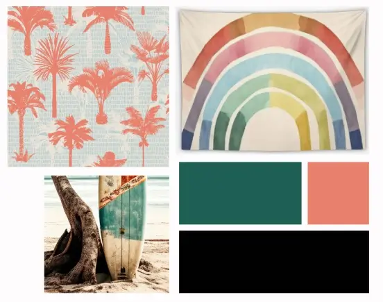

Site Title:

Background
Project Stori is the working title for a proposed journaling tool that seamlessly transforms prompted journal entries into ready-to-post social media content.
Site Purpose
The Project Stori Feedback Hub is designed to introduce and validate the Project Stori idea.
It will give users a chance to see how Project Stori works, share their feedback, and explore the potential the tool has for streamlining content creation.
This website will also help me to refine my idea and ensure it provides the right solution for the right audience.
Scenarios
This website intends to answer a few key questions that our target audience might ask:- What tools does Project Stori offer to save me time while staying consistent on social media?
- What makes Project Stori better than manually editing content for platforms like Instagram?
- Is it possible to preview how my content will look on social media before posting?
Color Schema
To play on the concept of capturing memories, we're going with a muted palette that's typical of vintage images.
The ocean and surf culture features heavily in my own, happy childhood memories, so I pieced together a simple color schema from bright, beachy images I found online.
| Project Stori Color Schema | ||
|---|---|---|
| Base Light | #FF5733 | |
| Base Dark | #010101 | |
| Primary Color | #1D6053 | |
| Highlight Color | #E8816E | |
Typography
Mono style fonts remind me of typewriters and those historical images of authors and journalists recording the sensational stories of their day.
As Project Stori is about both preserving our memories and sharing them, I thought a minimalistic typewriter style font like Noto Sans Mono seemed appropriate.
I may add a handwritten font later, just as a typographical accent in this web design, but for now, I'm happy with only Noto Sans Mono.
Wireframe
We're keeping our wireframe(s) simple to respect our users' time and to move them as quickly as possible to our Call To Action, which is to complete our feedback and waiting list form.
Our landing page begins with a case study, lists key benefits and displays the same Call To Action at least 3 times in the text.